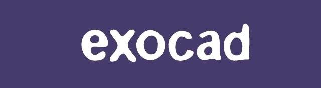
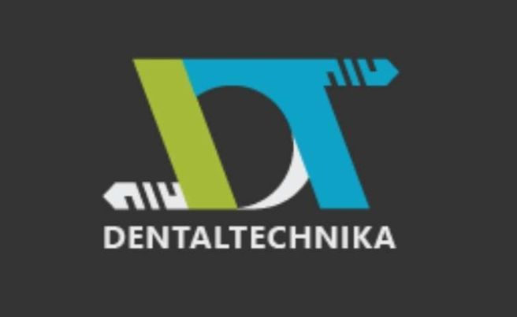

Szakmai kapcsolatok
Partnereink.
A MeshDent jelenlegi partneroldalán bemutatott vállalatok és technológiák.




Kapcsolat a laborral
Szakmai kapcsolatok
A MeshDent jelenlegi partneroldalán bemutatott vállalatok és technológiák.


Kapcsolat a laborral